Inputting & Outputting Data in Python
Outputting Data
If you want to display something on screen you can use the print() function. An example of code that prints to screen in IDLE is shown below:
print("Hello World")
This is what it would look like when run in IDLE:
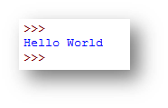
Inputting Data
If you want the user to enter data into the program, you can use the input() function. An example of code that will ask the user to enter their name and display it on screen using print() is shown below:
name = input("What is your name? ") # displays the message on screen and stores the input from the user in a variable called name
print("Hi "" +name)
This is what it would look like when run in IDLE:
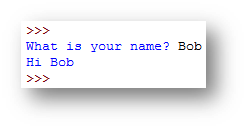
Example program 1 - Enter a Word
The code for the program below will allow the user to enter a word and store it in a variable called word. It will then use the print() function to output the word that they entered.
word = input("Please enter a word ")
print("You entered the word " + word)
When run in IDLE:
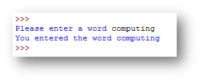
Example program 2 - Address Program
The code for the program below will allow the user to enter various pieces of information and store them in different variables. The print() function is then used to output all of the information.
number = input("Enter your house number: ")
street = input("Enter your street name: ")
town = input("Enter your town/city: ")
county = input("Enter your county: ")
postcode = input("Enter your postcode: ")
print("\nAddress Details:\n" + "Street: " + number + " " + street + "\nTown/City: " + town + "\nCounty: " + county + "\nPostcode: " + postcode)
When run in IDLE:
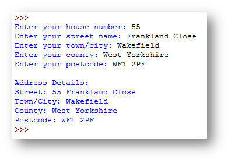
You can concatenate (join together) variables with strings in a print() function. In the address example print("Street: " + number + " " + street + "\nTown/City: " + town) will combine the strings “Street” and “Town/City” with the variables number, street and town.
\n is used to start a new line when it is displayed on screen.
Variables
A variable is used to temporarily store a piece of data.
For example:
number1 = 10
In the code above the variable is called number1 and the value it is storing is 10. Variables can hold any type of data. Using variables makes it easier for people to understand what is going on.
For example:
cost = 15
VAT = 3
total_cost = cost + VAT
Casting Variables
Python will automatically decide what type of data a variable should be, sometimes this isn’t right, therefore you will have to convert/cast variables to a different data type.
Integer
The program below will multiply a number by 5. When data is input from the user it will store it as a string. You will need to convert the variable number to an integer before performing a calculation. An example of how you do this is shown below:
number = input("Enter a whole number ")
answer = int(number) * 5 #converts the variable number to an integer and multiplies it by 5.
print(answer)
Real / Float
The program below will ask the user to enter their weight in kilograms (this could be a decimal) and convert it to pounds. You will need to convert the variable kg to a float before converting it. An example of how you do this is shown below:
kg = input("Enter the weight in KG ")
pounds = float(kg) * 2.2
print(pounds)
String
Using the program above, if you wanted to improve the print message so that it said Your weight in pounds is X you would need to convert the variable pounds to a string as it is currently a float.
print("Your weight in pounds is " + pounds)
This is what would happen if you ran the code currently:
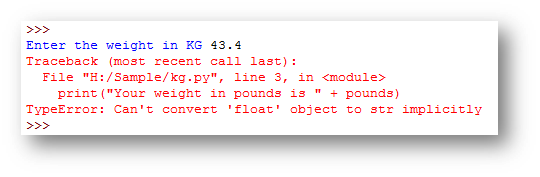
This is because the variable pounds is a float and to be joined with a string in the print message it needs to be converted to a string, the code is below:
print("Your weight in pounds is " + str(pounds))
Now when run the code it will work correctly:
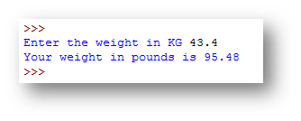
Example program 1 - Water Tank Capacity Program
The code for the program below will allow the user to enter the height, width and depth of a water tank, then calculate and output the capacity.
#three variables that store the inputs as a decimal (float)
height = float(input("Enter the tank height (cm): "))
width = float(input("Enter the tank width (cm): "))
depth = float(input("Enter the tank depth (cm): "))
#calculation to work out the capacity
capacity = (height * width * depth) / 1000
#outputs the capacity of the water tank
print("The tank holds" + round(capacity,2) + "litres of water")
When run in IDLE:
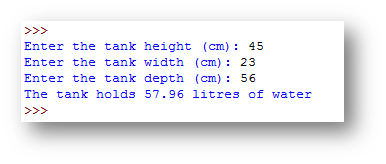
The code above rounds the variable capacity, to round a variable you use the round() function. You write the name of the variable followed by the number of decimal places e.g. round(capacity,2).
Example program 2 - Cylinder Volume Program
The code for the program below will allow the radius and height of a circle, then calculate and output the volume and surface area.
#three variables that store the two inputs and also the value of pie
radius = float(input("Enter the cylinder radius: "))
height = float(input("Enter the cylinder height: "))
pie = 3.14159
#calculations to work out the volume and surface area
volume = pie * (radius*radius) * height
surface = (2*(pie*(radius*radius)))+ (2*(pie*radius*height))
#outputs the volume and surface area of the cylinder
print("The volume of your cylinder is",round(volume,2),"to 2 decimal places")
print("The surface area of your cylinder is",round(surface,2),"to 2 decimal places")
When run in IDLE:
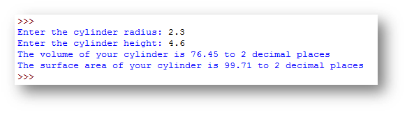
Selection (if, then, else)
Sometimes you will change what do you depending on the conditions.
For example: IF you wake up in the morning and it is raining THEN you will take a coat to school OTHERWISE you wont.
IF the day is a Saturday AND the alarm clock goes off THEN you might turn it off and stay in bed OTHERWISE you might get up.
Life is full of decisions that you will make depending on certain conditions, computers are no different.
if-else
For a computer to make decisions based on a condition, you must use an IF statement, it has the following structure:
if condition:
true
several instructions that are executed
if the calcualation evaluates to True
else:
false
several instructions that are exectued
if the condition evaluates to False
Consider the following IF statement:
age = int(input("Enter your age "))
if age >= 18:
print("You are an adult")
else:
print("You are still a child")
The IF statement explained:
- after the
ifis the conditionage >= 18followed by a colon, this is checking to see if the age variable is more than or equal to 18. - after that line is code is the code that will only be run if that condition is
True. If it is true it will print on screenYou are an adult. - the word else then follows followed by a colon. The instructions underneath this are what will be run only if that condition is
False. If it is false it will print on screenYou are still a child.
if-elif-else
An IF statement with an else will only allow you to check a single condition, however if you have more than one condition to check you can use if..elif..else
Consider the following IF statement:
colour = input("Enter the colour of the traffic light ")
if colour == "Red":
print("STOP")
elif colour == "Amber":
print("GET READY TO STOP")
else:
print("GO")
The IF statement explained:
- the program first checks to see if the colour entered is
Redand if it is will printSTOP. - if the colour entered isn’t red it will go onto the next condition where the
elifis and check if the colour isAmber. If it is then it will printGET READY TO STOP - if neither conditions are met it will go to the
elsepart of the code and printGO.
NOTE: It doesn’t need to use elif to see if the colour is Green as if it isn’t Red or Amber it must be Green, therefore you can just use else if there are not other options to consider.
Example program 1 - Capital City
The code for the program below ask the user the capital city of England and display a suitable message depending on whether they enter London.
#asks the user to enter a city and stores it in a variable called city
city = input("What is the capital city of England? ")
#checks if the city variable has London stored in it
if city=="London":
#displays correct if the condition is true
print("Correct the capital city of England is London")
else:
#displays wrong if they have entered something else
print("Wrong, try again")
When run in IDLE:
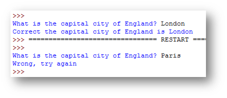
Example program 2 - Grade Calculator Program
The code for the program below will ask the user to enter a score on a test and then decide what grade they got.
score = int(input("Enter a score between 0 and 100: "))
if score >=70:
print("That test score is a grade A")
elif score>=60:
print("That test score is a grade B")
elif score>=50:
print("That test score is a grade C")
elif score>=40:
print("That test score is a grade D")
else:
print("That test score is a grade U")
NOTE: When elif is used it will only check the next condition if the previous condition is false.
When run in IDLE:
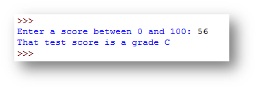
Example program 3 - Taxi Fare Calculator Program
The code for the program below will calculate the fare for a taxi ride depending on the distance and number of passengers. It should add 50% onto the total if there are more than 5 passengers.
#two inputs asking for the distance and passengers
km = float(input("Enter the distance of the taxi ride in kilometres (KM): "))
passengers = int(input("Enter the number of passengers: "))
#calculation to work out the cost
cost = 3 + ((km-1)*2)
#checks to see if the number of passengers is more than 5 so that the additional 50% cost can be added
if passengers > 5:
#calculates the extra cost if the condition is true
cost = cost * 1.5
#displays the total cost of the journey
print("The total cost of the journey for",passengers,"passengers is £{:.2f}".format(cost))
Important Points to Note
- there is no
elseon thisif, you do not need to have one. An if can just check a condition and do something if it isTrueand nothing if it isFalse - the
printcode is not indented, this is because it is not part of theifand will display regardless of whether there are more than 5 passengers. - in the
printcommand the cost is formatted to currency, this is done by writing£{:.2f}".format(variable)
When run in IDLE:
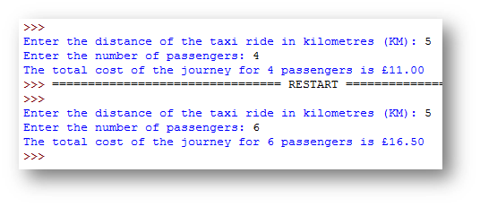
Validating Data
What is Validation?
Validation is the process of checking to see if data that is entered meets a set of requirements, this does mean it will always stop incorrect data being entered. For example if you had to enter a telephone number, you could validate it and say it needs to be 11 digits starting with a 0. The user could enter 01234567891, this meets the requirements set, but does not mean it is a valid telephone number.
There are some simple ways in which you can validate programs, these are:
- Type Check - checking the data is of a particular type before continuing
- Presence Check - checking that data is entered before continuing
- Range Check - checking that data is between two boundaries set
- Format Check - checking that data follows a set format
Type Check Example
In Python you can easily do a type check to check whether a value is a number or not a number, see the example below:
number = input("Enter a number ")
if number.isdigit()==True:
print("You entered a number")
else:
print("You didn't enter a number")
variable.isdigit() will return a value either True or False after checking to see if a variable is a number. You can then use an If to determine what to do.
When run in IDLE:
| 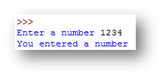 | Number entered |
|---|---|
| 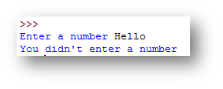 | Text entered |
Presence Check Example
In Python you can use the len() function to find the length of a variable or form control. You can then check to if the length is 0 and if it is this means nothing has been entered, see the example below:
number=input("Please enter a number: ")
if len(number)==0:
print("Please enter a number")
else:
print("Welcome to the program")
The len() function will return the length of the data stored in a variable. If the length is 0 this means nothing has been entered.
This is what happens when the program is run:
| 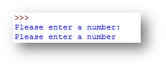 | Nothing entered |
|---|---|
| 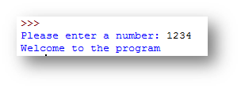 | Something entered |
Another way of using the len() function is with a while loop where it will keep asking the user to enter data until they have entered something. While the length of the input is equal to 0 it will keep asking the user
number=""
while len(number)==0:
number=input("Please enter a number: ")
print("You entered a number")
The len() function will return the length of the data stored in a variable. If the length is 0 this means nothing has been entered, therefore it will ask the user to enter a number again until they enter a value that has a length of more than 0 i.e. something is entered.
This is what happens when the program is run:
| 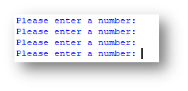 | Nothing entered 3 times |
|---|---|
| 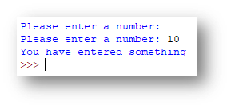 | Something entered after first failed attempt |
Range Check Example
You can also validate data by making sure it is within a certain range. For example, entering a test score you could say that it must be between 0 and 100. An example of how you could use a range check is shown below:
number=int(input("Please enter a number between 1 and 100: "))
if number>0 and number<= 100:
print("You entered a valid number")
else:
print("You must enter a number between 1 and 100")
To perform a range check you can simply use an if and then use and to connect two conditions together.
This is what happens when the program is run:
| 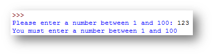 | Entered out of range |
|---|---|
| 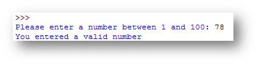 | Entered within range |
Format Check Example
If you want to perform a format check in Python you will need to make use of a library. The Regular Expressions library allows you to set a pattern and then check to see if the data follows that pattern.
Below are some examples of Regular Expressions patterns as well as what they mean:
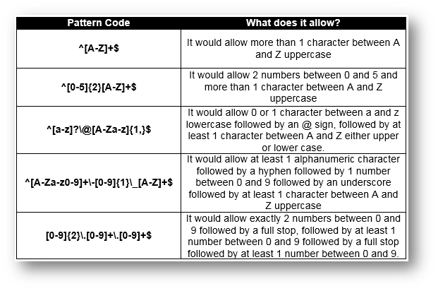
The program below will check if an email meets the right format requirements. For the purpose of this task the requirements are:
- it must start with at least one alphanumeric character
- followed by the @ sign
- followed by at least one alphanumeric character
- followed by a full stop (.)
- followed by at least one alphanumeric character.
The regular expression pattern that is needed to do this is:
^[A-Za-z0-9]+\@[A-Za-z0-9]+\.[A-Za-z0-9]+$
The code you need to perform a format check is shown below:
import re
email = input("Enter an email address: ")
pattern = "^[A-Za-z0-9]+\@[A-Za-z0-9]+\.[A-Za-z0-9]+$"
emailMatch = re.match(pattern, email)
if emailMatch:
print("This is a valid email format")
else:
print("This is an invalid email format")
How it works
- line 1 - imports the regular expressions library to be able to perform the format check
- line 1 - declares a variable called email to store the email input by the user
- line 2 - declares a variable called pattern to store the regular expression pattern that will be compared to the email address
- line 3 - this is a function from the regular expressions library. It will see if the email address matches the pattern set. It will then store the result in the variable called
emailMatch - line 4 - this will check if the emailMatch has been successful
- line 5 - if it is it will say it is a valid email
- line 7 - if it isn’t it will say it is an invalid email
This is what happens when the program is run:
| 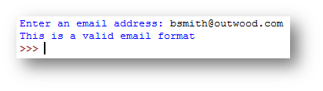 | Valid |
|---|---|
| 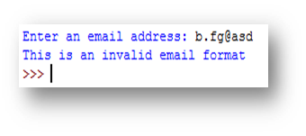 | Invalid |
Iteration - Count Controlled
Iteration is the process of repeating a process over and over. Often in programming you need to repeat a block of code several times.
FOR Loops
A for loop is known as a count controlled loop, you should use it when you want to repeat a block of code for a set number of times.
| 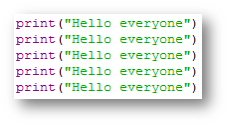 | 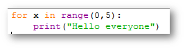 |
|---|---|
| Code without a loop | Code using a loop |
How the for loop works
- a
forloop will repeat for a set number of times and it will repeat between two ranges.range(min_value,max_value)will repeat between the bottom and the top value but not include the top value. range(1,5)will repeat 4 times, 1,2,3,4 but not 5 as it doesn’t repeat for the maximum value.xis just a variable that is a counter and stores the number in the loop, this is useful if you need to use it in calculations.
Example Program 1 - Name Repeater Program
This program asks the user to enter their name and their age. It will then print their name for the number of times their age.
name = input("Enter your name ")
age = input("Enter your age ")
#the loop uses the age entered as the maximum value in the loop
for x in range(0,int(age)):
print("Your name is " + name)
When run in IDLE:
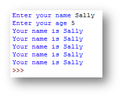
Example Program 2 - Timestable Program
This program will ask the user what timestable they want to learn, it will then calculate the timestables for that number. It makes use of the counter (x) in the loop to calculate the answer.
timestable = input("Enter the timestable you wish to learn (1-12) ")
# loop that will repeat 13 times (0-12)
for x in range(0,13):
# the answer uses x which increases each time to work out the answer
answer = x * int(timestable)
# x is used in the print command to display what it is multiplying the number entered by
print(timestable + " x " + str(x) + " = " + str(answer))
When run in IDLE:
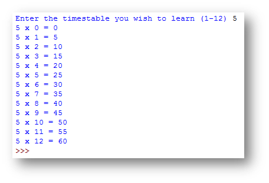
Example Program 3 - Total Calculator Program
This program asks the user to enter a five digit number. It then uses sub-strings to add digits 1,3 and 5 together and subtract digits 2 and 4. This program combines using an if with a for loop.
number = input("Enter a five digit number: ")
total = 0
#loop to repeat five times
for x in range(0,5):
#x is used to see how many digits have been checked
#if x is 0 this is the first time through the loop, therefore digit 1 is being checked, 2 is digit 3 and 4 is digit 5.
if x == 0 or x == 2 or x == 4:
#if it is digit 1,3 or 5 then it will add the number to the total
#the number is retrieved from the variable number by using x to get the correct digit
total = total + int(number[x])
else:
#if it is digit 2 or 4 then it will subtract the number from the total
total = total - int(number[x])
#the final total will be printed, this is after the loop has finished
print("The final total is: " + str(total))
When run in IDLE:
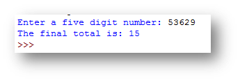
The answer on this example is 15. This is because it will add the first, third and fifth digit to the total (5 + 6 + 9) which gives 20. It then subtracts digits 2 and 4 (3 + 2) from the total, therefore 20 - 5 to give 15.
Example 4 - Finding the average of numbers in a list
This program has a list that contains test scores. The program will go through the list and add together all the numbers to get a total. It then works out the average of the test scores.
#a list called scores, that contains 5 test scores
scores = [10,12,7,6,10]
#the size of the list is found by using len, it will return 5
size = len(scores)
total = 0
#a loop that will repeat between 0 and the value of size
for x in range(0,size):
#it will use x from the loop to add the correct element from the list to the total
total = total + scores[x]
#the loop has now finished, the average is calculated by dividing the total by the size
average = total / size
print("The average of the numbers is: " + str(average))
When run in IDLE:
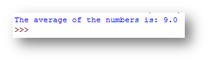
This program gives the average of 9 based on the values in the scores list. This is because 10 + 12 + 7 + 6 + 10 = 45. This is then divided by the size of the list (5) to give 9.
Iteration - Condition Controlled
Iteration is the process of repeating a process over and over. Often in programming you need to repeat a block of code several times.
WHILE Loops
A while loop is known as a condition controlled loop, you should use it when you do not know how many times the code needs to repeat as you can say repeat while a condition is True.
userentry="y"
while userentry!="n":
userentry=input("Play again? y/n ")
print("Game over")
When run in IDLE:
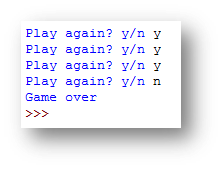
How the while loop works
- there is a condition after the word
while, it works like anifcondition.whilethe variableuserentryis not equal tonthe code inside the loop (that is indented) will repeat - when
nis entered by the user, the loop will end and it will continue with the code after the loop (not indented). In this case it willprint“Game Over”.
Example Program 1 - Guess the Number
This program asks the user to guess the number, it will keep asking them to guess the number until they guess it correctly. Once they have guessed it correctly it will tell them how many attempts it took.
answer = 15
attempts= 0
userentry=""
#a loop that repeats while the users guess is not the same as the answer
while answer != userentry:
userentry = int(input("Enter a number between 1 and 20 "))
#each time through the loop 1 is added to the number of attempts
attempts=attempts+1
#after the loop it will say how many attempts it took
print("Well done you correctly guessed the number it took you " + str(attempts) + " attempts")
When run in IDLE:
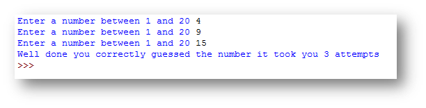
Example Program 2 - Adding User Numbers Program
This program asks the user to enter a number. It then asks them whether they want to enter another. If they do it will ask them another and add it to the previous number, it will keep doing this until they say they do not want to enter any more numbers. Finally it will output the total.
total = 0
another = "Y"
#the loop will repeat while the user types Y when asked if they want to enter another number
while another == "Y":
#asks the user to enter a number
number = int(input("Enter a number to add to the total: "))
#adds the number entered to the total
total = total + number
#asks the user if they want to enter another number
another = input("Do you want to enter another number? Y/N ")
#after the loop ends it outputs the total
print("The total of your numbers was" + str(total))
When run in IDLE:
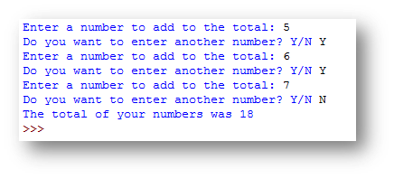
File Reading
Sometimes you will need to read data from a file to find information and then depending on what you find do something with it.
The process of reading from a file is always the same. The only thing that changes is what file you are using and what you are looking for in that file.
Below are the key steps to the process:
- Open a connection to a file
- Take input from the user to find out what you are looking for
- Read through each line of the file
- When you read a line split the information into a list (so you can check individual pieces of information)
- Check if the piece of information entered by the user is in the line
- If it is do whatever you need to do.
CSV Files
When reading data from a file, the easiest file type to use is a CSV file, this stands for comma separated values.
Consider the file below that contains a list of games for different consoles
| 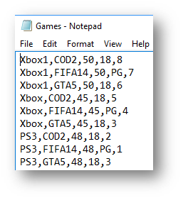 | 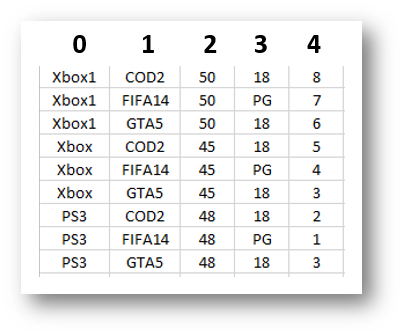 |
|---|---|
| CSV file as a text file | CSV file in Excel |
Each piece of data is separated by a comma. This means that when you split the information up you can say to the program split the information into the list every time you find a comma.
This means you can then refer to elements of the list to extract single pieces of information. Imagine the list you have is called games, the second image above shows how you would reference the information. If you wanted the name of the game it would be games[1], if you wanted to the rating it would be games[3]
Worked example - File Reading - Speeding Cars
Before creating a program to read data from a file you need to understand what data is in the file. In this example it will use a file called cars.csv, which is shown below:
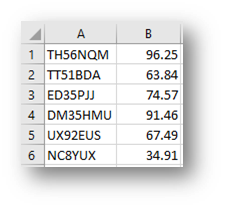
In this file there are two pieces of data, these are the car registration and the speed. When the data is split into a list, they can be referred to as element 0 for the registration and element 1 for the speed.
Step 1 - Saving the CSV file
You must always make sure the CSV file is saved in the same location as the Python file.
Step 2 - Creating a Connection to the file
file = open("cars.csv","r")
This code will create a connection to the file cars.csv and r mode which stands for read. It can then be referred to as the variable name which is file
Step 3 - Taking Input from the User In this program we need to find out the speed limit so we can compare it to the speed that the car is travelling to see if it is speeding, therefore we need to ask the user the speed limit.
limit = int(input("Please enter the speed limit: "))
The code so far now looks like this:
file = open("cars.csv","r")
limit = int(input("Please enter the speed limit: "))
Step 4 - Reading through the file Now each line of the file needs to be checked, you will need to use a loop to do this.
for line in file:
The code so far now looks like this:
file = open("cars.csv","r")
limit = int(input("Please enter the speed limit: "))
for line in file:
Step 5 - Read a line from the file and split the data up
Now we have a loop that will read each line in the file, we need to read one line at a time, and split the information up. We know it is a csv file and therefore each piece of data is separated by a comma. When it splits the line from the file it needs to store it in a list, the list below is called details. As the piece of information we need from the file is the speed, the program then takes element 1 from the list and stores it as speed
details = line.split(",")
speed = float(details[1])
The code so far now looks like this:
file = open("cars.csv","r")
limit = int(input("Please enter the speed limit: "))
for line in file:
details = line.split(",")
speed = float(details[1])
Step 6 - Checking the Data The next stage is to check the data that we have read from the file. In this case we want to see if the speed is greater than (>) the speed limit.
if speed > limit:
The code so far now looks like this:
file = open("cars.csv","r")
limit = int(input("Please enter the speed limit: "))
for line in file:
details = line.split(",")
speed = float(details[1])
if speed > limit:
Step 7 - If the condition is met
If the condition is met and in this case the car is speeding then you can type the code you want to run like you would for a normal if statement. In this example we want to display the information of the speeding cars.
print(details[0] + " " + details[1])
The final code looks like this:
file = open("cars.csv","r")
limit = int(input("Please enter the speed limit: "))
for line in file:
details = line.split(",")
speed = float(details[1])
if speed > limit:
print(details[0] + " " + details[1])
The finished program looks like this:
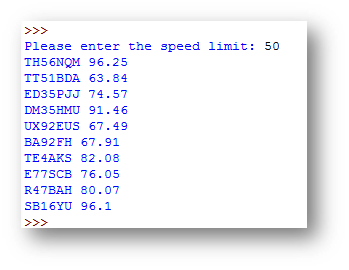
Dealing with no matches found in the file
Sometimes the information you are looking for in a file might not be there, you will need to let the user know this.
At the moment when you enter a speed limit where there are no cars speeding, the program does this:
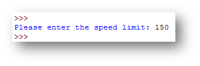
What it should do is display a message something like There are no speeding cars, as shown below:

How to do this
- Create a boolean variable at the start of the program called
foundand set it toFalse. This is because at the start of the program no matches have been found.found = False - When a match has been found (inside the IF statement) add a line of code to change that variable to
True.if speed > limit: found=True #new line of code print(details[0] + " " + details[1]) - After the
forloop create anifthat checks iffound==False. If found is still False and it has been through the loop and read the whole file and it is still False this means that the information you have been looking for in the file has not been found.if found==False: - Finally code what you want to happen if there are no matches inside the
if.if found==False: print("There are no speeding cars")
The final code now looks like this:
found = False #new code
file = open("cars.csv","r")
limit = int(input("Please enter the speed limit: "))
for line in file:
details = line.split(",")
speed = float(details[1])
if speed > limit:
found = True #new code
print(details[0] + " " + details[1])
if found==False: #new code
print("There are no speeding cars") #new code
NOTE: You must use a variable to do this rather than adding an else to the if as otherwise it could display the message multiple times, for example:
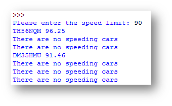
Example Program 1 - Timetable Program
This program asks the user to enter the day you want to view the timetable for. It will then look in the file and find the lessons for that day or say that it cannot be found.
The CSV file looks like this:
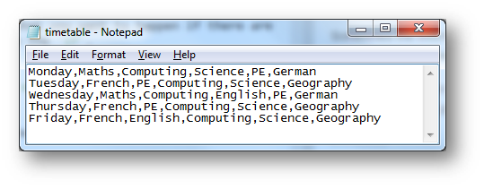
file=open("timetable.csv","r") #opens the file
day = input("Enter the day you want to view your timetable for: ") #gets the input from the user
found=False #stores whether the day is found in the file, set to False at the beginning
for line in file: #reads each line in the file
timetable=line.split(",") #splits the line into the timetable list
if day == timetable[0]: #checks if the day entered is in element 0 of the list
#if it is it prints the timetable referring to the different elements of the list
print("On " + timetable[0] + " your lessons are: \n"+
"Period 1 - " + timetable[1] + "\n Period 2 - " +
timetable[2] + "\n Period 3 - " + timetable[3] +
"\n Period 4 - " + timetable[4] + "\n Period 5 - " + timetable[5])
#sets found to True as a match is found
found=True
if found==False: #after the loops checks if found if still False
#displays a message if it is
print("Please enter a day between Monday and Friday")
When run in IDLE:
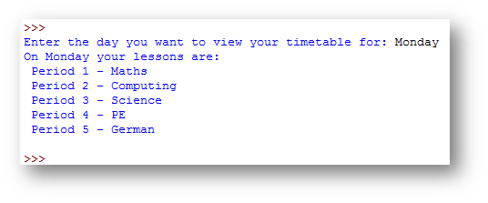
Example Program 2 - Stock Checker
This program asks the user to enter the games console they are looking for. It will then look through the file and calculate the total value of each game in stock (the number there are multiplied by the price). If there are no games for that console it will say Console not found.
The CSV file looks like this:
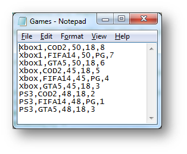
console = input("Please enter a console (Xbox1, Xbox, PS3, PS4): ") #gets the input from the user
file=open("games.csv","r") #opens the file
found = False #stores whether the console is found in the file, set to False at the beginning
gamevalue=0 #stores the total value of a game
for line in file: #reads each line in the file
details=line.split(",") #splits the line into the details list
if details[0] == console: #checks if the console entered is in element 0 of the list
found = True #sets found to True as a match is found
#variables that store different pieces of information from the list to make them easier to reference
game = details[1]
price = float(details[2])
rating = details[3]
noinstock = int(details[4])
gamevalue = price * noinstock #calculates the total stock value of a game
#prints the game information to screen
print(game + " " + str(price) + " " + rating + " " + str(noinstock) + " " + str(gamevalue))
if found==False: #after the loops checks if found if still False
#displays a message if it is
print("Console not found")
When run in IDLE:
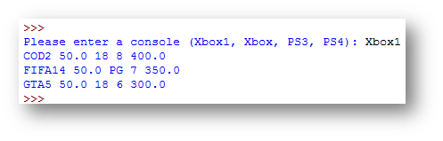
Reading through a file multiple times
Sometimes you may need to read through a file to find something and if it doesn’t find what you are looking for then try to find something else. To do this you would need to create a loop to repeat the process.
Using the example of the Stock Checker if you enter the console PS4 it will say Console not found and then the program stops (see below). If you wanted to then try a different console you would have to run the program again.
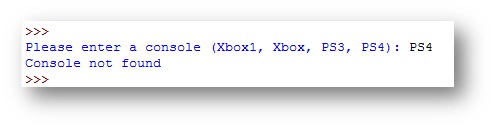
If you inserted a loop into the program, it could ask you if you wanted to check another console and then repeat the process, like shown below:
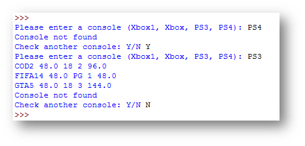
This is how the code would change from the example above:
checkanother="Y" #new line 1
while checkanother =="Y": #new line 2
console = input("Please enter a console (Xbox1, Xbox, PS3, PS4): ")
file=open("games.csv","r")
found = False
for line in file:
details=line.split(",")
if details[0] == console:
game = details[1]
price = float(details[2])
rating = details[3]
noinstock = int(details[4])
gamevalue = price * noinstock
print(game,str(price),rating,str(noinstock),str(gamevalue))
if found==False:
print("Console not found")
checkanother=input("Check another console: Y/N ") #new line 3
How it Works
- New Line 1 - this is a variable that keeps track of whether they want to check another console. This is set to
Yat the start as when the program is ran for the first time they will want to check a console. - New Line 2 - this is a
whileloop that will repeat while thecheckanothervariable is equal toY. All of the previous code is then put inside this loop. - New Line 3 - after the file has been checked once, the program asks whether the user wants to check another product, it will then go back to the start of the loop. If they have entered
Yit will go around the loop again, if they have typed anything else it will not loop again and stop.
When run in IDLE:
File Writing
Sometimes you will need to write data to a file.
The process of writing to a file is always the same. The only thing that changes is what file you are writing to and what you write to the file.
Below are the key steps to the process:
- Open a connection to a file in append mode.
- Write the information you want to a file
- Close the connection to the file
Write modes
When you read from a file you would use the cost file = open("filename.csv","r"). The r stands for read. It would make sense that when you write to a file you use w instead, but you don’t. w does stand for write mode, but it means overwrite. Therefore each time you write to the file it will overwrite what is in there already.
Therefore when you want to open a connection to a file to write to, you use append or a mode. Append means add. It will add to the file rather than overwrite what is already there.
writefile = open("filename.csv","a")
NOTE: you can call the variable writefile whatever you want.
Worked example - File Writing - Christmas List
Imagine a program that when run asks the user to enter a gift they want for Christmas, how much it costs and the priority of how much they want it.
Step 1 - Getting the information to write to the file
gift = input("Enter the gift you would like: ")
cost = input("Enter the cost of the gift: ")
priority = input("Enter the priority of the gift (1=low, 5=high): ")
Before you can write to the file you need to get the information from the user that you want to add to the file.
Step 2 - Creating a Connection to the file
writefile = open("filename.csv","a")
This code will create a connection to the file filename.csv in a mode which stands for append. It can then be referred to as the variable name which is writefile
Step 3 - Write the Information to the File
As you are writing to a csv file you need to separate each piece of data that you want to add with a comma.
writefile.write(gift + "," + cost + "," + priority + "\n")
NOTE: the \n at the end means new line, this means next time you write to the file it will add the new set of information on a new line.
Step 4 - Closing the Connection Once you have written to the file you need to close the connection to the file. This means it can be used by other parts of the program if needed.
writefile.close()
The final code looks like this:
gift = input("Enter the gift you would like: ")
cost = input("Enter the cost of the gift: ")
priority = input("Enter the priority of the gift (1=low, 5=high): ")
writefile = open("christmaslist.csv","a")
writefile.write(gift + "," + cost + "," + priority + "\n")
writefile.close()
print("Gift added to the file")
The finished program looks like this when run:
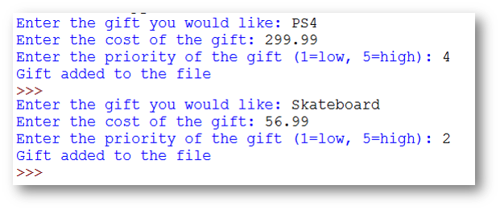
The file created looks like this:
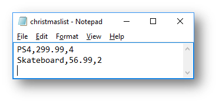
Example Program 1 - Deciding whether to write to a file
Sometimes before you add information to a file, you might need to check if it meets certain requirements. This will require building selection (IF) into your code.
At the moment the program above will always write the information entered to a file. Consider this new requirement:
Santa is running out of money, it should only write to the file gifts that cost less than £150, otherwise say they cost too much
How to do this
- After the information has been entered create an
ifthat checks if thecostis less than 150.
gift = input("Enter the gift you would like: ")
cost = input("Enter the cost of the gift: ")
priority = input("Enter the priority of the gift (1=low, 5=high): ")
if float(cost)<150:
ifthe cost is less than £150, then the lines of code that write to a file should be run.
if float(cost)<150:
writefile = open("christmaslist.csv","a")
writefile.write(gift + "," + cost + "," + priority + "\n")
writefile.close()
print("Gift added to the file")
ifthe cost is not less than £150, add anelseand add code to say that the gift is too expensive.
else:
print("That gift is too expensive, Santa doesn't have enough money")
The final code now looks like this:
gift = input("Enter the gift you would like: ")
cost = input("Enter the cost of the gift: ")
priority = input("Enter the priority of the gift (1=low, 5=high): ")
if float(cost)<150: #new code
writefile = open("christmaslist.csv","a")
writefile.write(gift + "," + cost + "," + priority + "\n")
writefile.close()
print("Gift added to the file")
else: #new code
print("That gift is too expensive, Santa doesn't have enough money") #new code
Example Program 2 - Checking if data exists in a file before adding new data
Sometimes you will need to create a program that reads through a file to see if certain information exists. If it doesn’t then write it to a file.
This program asks the user to enter their names, email address and the number of years they have been teaching. It then looks in the file to see if the email address already exists. If it doesn’t it will write the information entered to a file, if it does it will say that person already exists.
The CSV file looks like this:
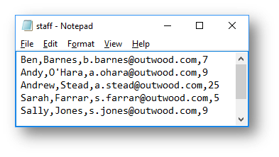
#ask the user to enter four pieces of information
firstname = input("Enter your first name: ")
surname = input("Enter your surname: ")
email = input("Enter your email: ")
yearsteaching = input("Enter the number of years teaching: ")
file = open("staff.csv","r") #opens the file in read mode
found=False #sets whether the user is found to False
for line in file: #reads each line in the file
staff = line.split(",") #splits the line into the list called staff
if staff[2] == email: #checks if the email entered is in the list
found=True #if it is changes found to True
file.close() #closes the file
if found==True: #after the loop checks if the user is found
print("Staff member already exists in the file") #displays on screen
else:
#if the email was not in the file
writefile=open("staff.csv","a") #open the file in append mode
writefile.write(firstname + "," + surname + "," + email + "," + yearsteaching) #write the new information to the file
writefile.close() #close the file
print("Staff member added to file")
When run in IDLE:
| 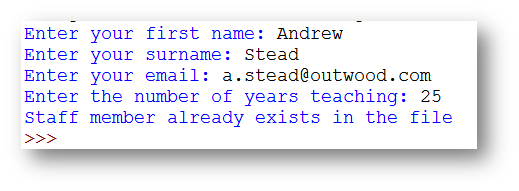 | |
|---|---|
| Member of staff exists | File after program has run |
| 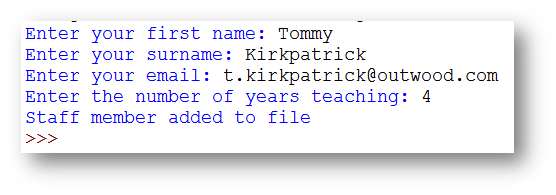 | 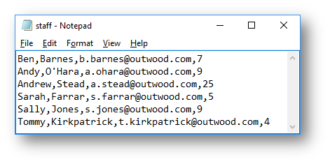 |
|---|---|
| Member of staff doesn’t exist | File after program has run |
Example Program 3 - Reading Data from one file and writing to a separate file
This program looks through a file that contains a list of students and the scores that they have got in four tests. When run it should calculate the average score for each student. If it is over 50 it should write their name and their average score to a new file, if not it should do nothing. The program should also count how many people have averaged above 50.
The CSV file looks like this:
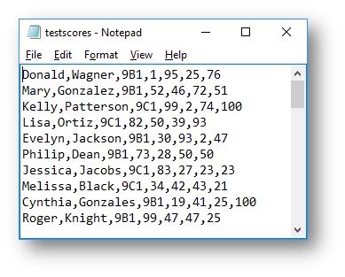
total =0
average = 0
studentsover50 = 0 #variable to store how many students have averaged over 50
print("Students who have averaged over 50")
file = open("testscores.csv","r") #opens the file in read mode
for line in file: #reads each line in the file
scores = line.split(",") #splits the line into the list called scores
total = int(scores[3]) + int(scores[4]) + int(scores[5]) + int(scores[6]) #adds up the four test scores
average = total / 4 #calculates the average of the four test scores
if average>50: #checks if the average is more than 50
print(scores[0] + "\t" + scores[1] + "\t" + scores[2] + "\t" + str(average)) #prints the name, class and average score
studentsover50 = studentsover50 + 1 #adds 1 to the number of students averaging over 50
writefile = open("averageover50.csv","a") #opens the file averageover50.csv in append mode
writefile.write(scores[0] + "," + scores[1] + "," + scores[2] + "," + str(average)+"\n") #writes the same information that has been printed to screen to file
writefile.close() #closes the file
if studentsover50==0: #after the loop checks if the studentsover50 variable is 0
print("There were no students that averaged over 50") #if it is then say no students averaged over 50
else:
print("The number of students averaging over 50 was " + studentsover50) #if not says how many averaged over 50.
The program when run:
| IDLE | averageover50.csv file |
File Updating
Unfortunately, when you want to update information in a file when programming you cannot simply find the information and say what you want to change, you have to recreate the whole file changing the single piece of information you want to update, these are the steps you must go through:
- Read through each line of the original file that contains the information you want to update.
- If the line of the file has the information you want to update, then you can change the information, you then write this information to an updated file
- If the line of the file doesn’t have the information you want to update, then you write this information (unchanged) to the updated file
- Once the entire original file has been checked, the updated file should have the same number of lines in, but with the updated information. Then you must delete the original file and rename the updated file to the name of the original file.
NOTE: There are no new programming skills here, however you will need to combine the skills for reading and writing to a file together and program it in a logical order.
Worked example - File Updating - Staff Details
Imagine a program that has a file that contains information of staff working in a school. The program when run should ask the user to enter an email address to find the staff details. When it finds a match it should ask for the new information and then update the file. If it doesn’t find a match it should say that the email address is not in the file.
The CSV file looks like this:

Program Summary A summary of how the program should work:
- Read a line from the file and compare the email address
- If it is a match ask the user to enter the new information and then write the new information to the update file.
- If it isn’t a match write the information that has been read into the list to the update file unchanged.
- After every line in the whole file has been checked, delete the original file, rename the updated file to the name of the original file.
Consider this code:
email = input("Enter the email address you are looking for:")
file = open("staff.csv","r")
found=False
for line in file:
staff = line.split(",")
if staff[2] == email:
found=True
print("Enter the new information for this member of staff")
firstname = input("Enter their first name: ")
surname = input("Enter their surname: ")
email = input("Enter their email address: ")
yearsteaching =input("Enter their number of years teaching: " )
if found==True:
print("Details updated")
else:
print("That staff member's email cannot be found in the file, no changes made")
So far this program will ask the user to enter an email address. It will then open the staff file and check each line in the file for that email address. If it finds it then it will ask the user to enter the new information, but not do anything with it.
After the loop has finished it will check to see if the found variable is True and if it is say details updated and if not say the staff member cannot be found.
NOTE: it doesn’t actually update the details at the moment.
The code once it updates the file:
import os, sys #new line 1
email = input("Enter the email address you are looking for:")
file = open("staff.csv","r")
found=False
for line in file:
staff = line.split(",")
writefile = open("staffupdated.csv","a") #new line 2
if staff[2] == email:
found=True
print("Enter the new information for this member of staff")
firstname = input("Enter their first name: ")
surname = input("Enter their surname: ")
email = input("Enter their email address: ")
yearsteaching =input("Enter their number of years teaching: " )
writefile.write(firstname + "," + surname + "," + email + "," + yearsteaching+"\n") #new line 3
else: #new line 4
writefile.write(staff[0] + "," + staff[1] + "," + staff[2] + "," + staff[3]) #new line 5
writefile.close() #new line 6
file.close() #new line 7
os.remove("staff.csv") #new line 8
os.rename("staffupdated.csv","staff.csv") #new line 9
if found==True:
print("Details updated")
else:
print("That staff member's email cannot be found in the file, no changes made")
What the new code does
- New Line 1 - imports a library that is needed so that you can delete and rename files.
- New Line 2 - opens a connection to a new temporary file called staffupdated.csv in append mode. This will be the new file with the updated information in.
- New Line 3 - if the email address is found and the user has entered all the new information, it will write to the file all the new updated information.
- New Line 4 - an
elseis added so that if a line of the file has been read and it isn’t a match it must write the information unchanged to the temporary file. - New Line 5 - it will write the information that has been read into the list to the temporary file unchanged.
- New Line 6 - closes the connection to the file you are writing to. This should be done after the
ifbut inside theforloop. - New Line 7 - closes the connection to the file you are reading from. This should be done after the
forloop. - New Line 8 - this will remove the original file, in this case
staff.csv - New Line 9 - this will rename the temporary file
staffupdated.csvtostaff.csvwhich will mean the updated information now appears in the original file.
When the program is run in IDLE and the staff member exists in the file:
How the CSV file changes:
| Before the update | |
|---|---|
| After the update |
When the program is run in IDLE and the staff member doesn’t exist in the file:
Example Program 1 - Updating a File - Zoo Animals
This program looks through a file that contains a list of animals and how many of them there are in the zoo. When run it should ask the user the animal that they are looking for and if it finds it then ask for the new number of that animals at the zoo and update the file.
The CSV file looks like this:
import os, sys #imports the os library
animal = input("Enter the animal you are looking for:") #asks the user to enter the animal they are looking for
file = open("zooanimals.csv","r") #opens the file in read mode
found=False #sets whether the animal is found to False
for line in file: #reads each line in the file
details = line.split(",") #splits the line into the list called details
writefile = open("zooanimalsupdated.csv","a") #opens the file zooanimalsupdated.csv in append mode
if details[0] == animal: #checks if the animal is found in the list
found=True #if it is changes found to True
number = input("Enter the new number of " + animal + " at the Zoo:") #asks the user to enter the number of that animal at the zoo
writefile.write(details[0] + "," + number+"\n") #writes the animal and the new number to the temp file
else:
writefile.write(details[0] + "," + details[1]) #if that line doesn't contain the animal write the details from the list to the temp file unchanged.
writefile.close() #closes the file that is being written to
file.close() #closes the file that is being read
os.remove("zooanimals.csv") #deletes the original file
os.rename("zooanimalsupdated.csv","zooanimals.csv") #renames the temporary file to the original file name
if found==True: #after the loop checks if the animal is found
print("Details updated") #if the animal was found say details updated
else:
print("That animal cannot be found in the file, no changes made") #if the animal wasn't found say it cannot be found
The program when run in IDLE with an animal in the file:
 |
|
|---|---|
| Before Update | After Update |
The program when run in IDLE with an animal not in the file:
|
|
|---|---|
| Before Update | After Update |
Arrays/Lists
What is a list/array?
A list or array is a variable that can store multiple pieces of data under a single name. You can reference parts of the lists to view/change information in them using an index.
A list in Python is created in the following way:
sentence = ["The","quick","grey","fox","jumps"]
This example creates a list called sentence that has 5 elements to it.
If you wanted to display the word grey on screen you would type:
print(sentence[2])
NOTE: although grey is the third element in the list it is retrieved by saying sentence[2], this is because the elements start at 0.
If you wanted to output the entire contents of the list you could do this:
sentence = ["The","quick","grey","fox","jumps"]
print(sentence[0])
print(sentence[1])
print(sentence[2])
print(sentence[3])
print(sentence[4])
You could also use a loop to do the same thing:
sentence = ["The","quick","grey","fox","jumps"]
for x in range(0,len(sentence)):
print(sentence[x])
Example program 1 - Finding Products from a List
The code for the program below asks the user to enter a product code. It will then look for it in the list. If it finds it it will display the name and price of the product. If it isn’t found it will say Product not found.
#this is a list that contains product informaton
product = ["1262", "Cornflakes", "£1.40", "8743", "Weetabix", "£1.20", "9512", "Rice Krispies", "£1.32"]
#stores whether the product has been found
found= False
#asks the user to enter a product code
product_code=input("Enter the product to find: ")
#a loop that will repeat for the length of the list
for x in range(0,len(product)):
#checks if the product code entered matches the current element of the list being checked
if product[x] == product_code:
#if it is it prints the name and cost
print(product[x + 1])
print(product[x + 2])
#sets found to true as the product is found
found = True
#after the loop checks if the product was not found
if found==False:
#if it wasn't found it says product not found
print("Product not found")
When run in IDLE:
Example program 2 - Adding/Remove from a list
This program asks the user if they want to add or remove items from a list. It will show you what the list contains at the start. When the user has entered their option it will either add or remove the item entered and then output the updated list.
#Create a new list
inventory = ["torch","gold coin","key"]
# for loop that outputs the current list
print("Current Inventory")
for x in range(len(inventory)):
print(inventory[x])
#menu that gives the options of what can be done
print("What would you like to do? ")
print("1. Add an item to the inventory")
print("2. Remove an item from the inventory")
#gets the user to enter their menu choice
option = input(">> ")
#if the first option is selected
if option == "1":
#ask the user to input the item to add
item = input("Enter the name of the item you want to add to the inventory: ")
#use append to add it to the list
inventory.append(item)
#if the second option is selected
elif option == "2":
#ask the user to input the item to remove
item = input("Enter the name of the item you want to remove from the inventory: ")
#use remove to delete the item from the list
inventory.remove(item)
#for loop that will output the updated list
print("Updated inventory list")
for x in range(len(inventory)):
print(inventory[x])
When run in IDLE:
| Adding | |
|---|---|
| Removing |
Functions
What are Procedures / Functions?
- When producing large programs you can end up with a lot of code. Procedures and functions allow for programs to be broken up into smaller pieces.
- This makes them easier to read and easier to follow. It also means that if you work in a team, people can create different procedures/functions and combine them together.
- Procedures/Functions can take values from the main program and do something with them e.g. add numbers together etc.
What does a function look like?
A function is either being defined or called. You define the function and what you want it to do first. Then in the main program you call the function that you have created.
Defining
def functionname(parameters):
CODE INSIDE THE FUNCTION
Calling
functionname(parameters)
Worked example - VAT Calculator
This program will ask the user to enter a price and then calculate the VAT by calling a function.
Step 1 - Create the function The first thing you should do is create the function that calculates the VAT (VAT is 20% of the price)
To define a function you need to do the following:
def calculate(price):
What this does:
- def - this lets python know you are defining a function
- calculate - this is the name of the function
- (price) - this is a parameter. This is what is passed from the main program into the function. You refer to the value passed into the function by price.
Once the function is defined you can write whatever code you want to execute inside of it. In this case we need to work out the VAT, this is 20% of the price.
def calculate(price):
vat = price * 0.2
The final step is to return the VAT value back to the main program, therefore you need to add the code:
return vat
Step 2 - Creating the Main Program Once you have created the necessary functions you can create the main program. In this program the user needs to enter the price, like shown below:
amount = float(input("Enter a price: "))
NOTE: The main program must come after the functions, otherwise it will not find the function you will end up calling. It must also not be indented inside the function.
Now you have the input from the user you need to print the VAT. To do this you will need to use the print command like you normally would but inside of it call the function you created earlier. Add the following code:
print("The VAT is £{:.2f}".format(calculate(amount)))
The first part of the print command works like it always would, but then it called the function calculate and passes the amount that was entered into the function. Once the amount is in the function it is referred to as price. This is known as a local variable that can only be used within that function.
The final code looks like this:
def calculate(price):
vat = price * 0.2
return vat
amount = float(input("Enter a price: "))
print("The VAT is £{:.2f}".format(calculate(amount)))
When run in IDLE:
Example Program 1 - Highest Number
This program will ask the user to enter two numbers. A function will then be called that checks which number is the highest and then output which one is the largest. If they are the same it will say they are the same.
#function that uses two parameters
def max(first,second):
#checks if first is more than second
if first>second:
#if it is returns the first number
return first
#checks if second is more than first
elif second>first:
#if it is returns the second number
return second
else:
#if they are the same returns 0
return 0
#asks the user to enter two numbers
num1=int(input("Enter the first number: "))
num2=int(input("Enter the second number: "))
#calls the function and stores the result in highest
highest = max(num1,num2)
#if highest is 0 that means they are the same
if highest==0:
print("Both numbers are the same")
else:
#if highest is not 0 it prints the largest number
print(str(highest) + " is the largest number")
When run in IDLE:
Example Program 2 - Conversion Program
This program will ask the user what conversion method they want to use. After the user has chosen an option it will then ask them to enter a value. It will then call the relevant function and convert the number.
#function that converts miles to kilometres
def mtokm(value):
answer = value * 1.6
return answer
#function that converts kilometres to miles
def kmtom(value):
answer = value * 0.62
return answer
#function that converts cm to inches
def cmtoinch(value):
answer = value * 0.39
return answer
#function that converts inches to cm
def inchtocm(value):
answer = value * 2.54
return answer
#function that generates the menu
def menu():
print("What conversion would you like to do?")
print("1. Convert Miles to Kilometers")
print("2. Convert Kilometers to Miles")
print("3. Convert CM to Inches")
print("4. Convert Inches to CM")
menu() #calls the menu function
#gets the option from the user input
option = input(">>")
print()
#asks the user to enter the measurement
number = float(input("Enter your measurement to convert: "))
#if the option entered is 1
if option=="1":
#calls the relevant function and then displays the conversion =
print(str(number) + " miles in KM is " + str(mtokm(number)))
#if the option entered is 2
elif option=="2":
#calls the relevant function and then displays the conversion =
print(str(number) + " KM in miles is " + str(kmtom(number)))
#if the option entered is 3
elif option=="3":
#calls the relevant function and then displays the conversion =
print(str(number) + " CM in inches is " + str(cmtoinch(number)))
#if any other value is entered
else:
#calls the relevant function and then displays the conversion =
print(str(number) + " inches in CM is " + str(inchtocm(number)))
When run in IDLE: